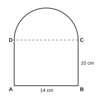

| For examiner's use only | |
|---|---|
| PART I – A | / 30 |
| PART I – B | / 20 |
| PART II | / 50 |
| Total | / 100 |
Part A – Answer all questions in the space provided. (2 marks each)
Find the sum: 11012 + 1112 (give the answer in base two)
Find the value: (23)2 × 2−4
Round off 3.4672 to two decimal places.
The nth term of a number pattern is 4n − 1. Find its 20th term.
34 of a number is 27. Find the number.
18% of a sum of money is Rs 54. Find the sum of money.
Expand and simplify: (x + 5)(x − 3)
A rectangular tank is 2 m long, 1.5 m wide and 1 m high. How many litres of water can it hold when full?
A and B are two fixed points. Name the locus of the points which are equidistant from A and B.
Using the formula s = a + b + c2, find s when a = 5, b = 7 and c = 8.
Show that a triangle with sides 7 cm, 24 cm and 25 cm is a right-angled triangle.
The mass of an object is 3.2 × 105 g. Write this as an ordinary number and in kilograms.
Find the magnitude of an exterior angle of a regular octagon.
Write the inequality represented on the number line, and write all the integers that satisfy it.
Simplify: 2x + 32x
Part B – Answer both questions on this paper. (10 marks each)
A ship leaves a harbour H and sails 40 km on a bearing of 060° to a point A. From A it sails 30 km on a bearing of 150° to a point B.
A rectangular water tank is 1.2 m long, 0.8 m wide and 1 m high.
Answer five questions only. (10 marks each)
Incomplete tables of values for the functions y = 3 − x and y = x + 1 are given below.
y = 3 − x
| x | −1 | 0 | 1 | 2 | 3 | 4 |
|---|---|---|---|---|---|---|
| y | 4 | … | 2 | … | 0 | −1 |
y = x + 1
| x | −1 | 0 | 1 | 2 | 3 | 4 |
|---|---|---|---|---|---|---|
| y | 0 | 1 | … | 3 | … | 5 |
Use only a straight edge with a cm/mm scale and a pair of compasses for the following constructions. Show all construction lines.
The figure is made of a rectangle ABCD with a semicircle drawn on the side DC. AB = 14 cm and BC = 10 cm. (π = 227)
